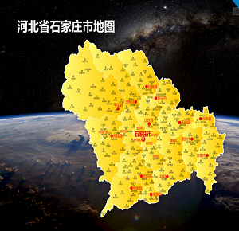
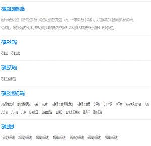

- 石家庄，简称“石”，河北省省会，地处河北省西南部，旧称石门。截至2016年底，石家庄辖区总面积15848平方公里，市区面积2206平方公里，全市常住人口1078.46万人，下辖8个区、11个县，代管2个县级市。
- 石家庄地处河北省中南部，环渤海湾经济区。东与衡水接壤，南与邢台毗连，西与山西为邻，北与保定交界，距首都北京273公里。...
- 石家庄跨华北平原和太行山地两大地貌单元，是全国粮、菜、肉、蛋、果主产区之一，农业集约化和产业化水平较高，生产规模位居全国36个重点城市第一位，被国家确定为优质小麦生产基地，素有“北方粮仓”之称。
- 因毛泽东主席在石家庄市平山县西柏坡指挥的三大战役，又被誉为“新中国的摇篮”。 2016年2月23日，石家庄在CCTV“中国经济生活大调查”2015年度十大最具幸福感省会城市中名列第八。

- 市内有水上公园 纪念碑 空中花园 长安公园 南高基滑雪场 天山海世界 世纪公园 龙行游船 毗卢寺。
- 灵寿有五岳寨 秋山 水泉溪 透雕石牌楼 幽居寺塔 横山湖 中山湖。正定有 荣国府 隆兴寺 赵云庙 正定四塔。
- 平山有 西柏坡 天桂山 驼梁山 白鹿温泉 沕沕水 藤龙山 东方巨龟苑 银河洞 野河漂流 拦道石景点 紫云山石鼓寨 黑山大峡谷 天砚山 猪圈沟 老虎头。
- 井陉有 苍岩山 清凉山 仙台山 于家石头村 锦山 挂云山 秦皇古驿道 清凉山滑雪场 秦皇古道滑雪场。
- 鹿泉有 抱犊寨 植物园 动物园 封龙山 龙凤湖 双龙山公园 龙泉寺。
- 赞皇有 嶂石岩 棋盘山 五马山 锁云湖 窦家寨。
- 赵县有 赵州桥 柏林禅寺 陀罗尼经幢。
- 晋州有魏征公园 周家庄采摘园。
- 藁城有国大御温泉假日酒店。行唐有牛王寨。
